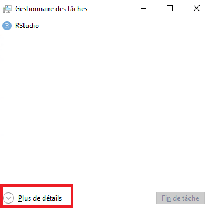
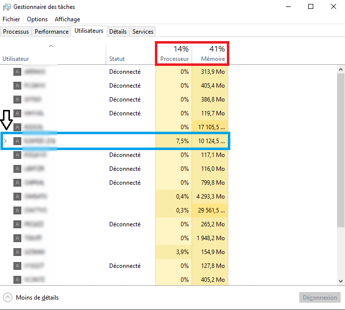
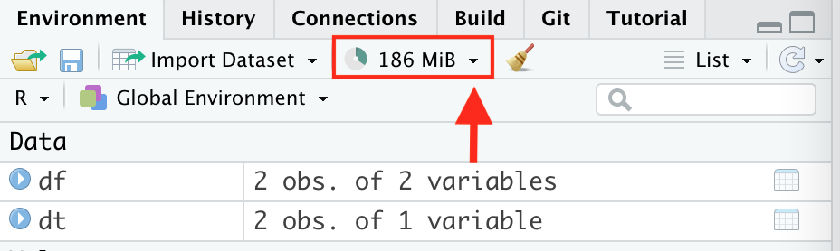
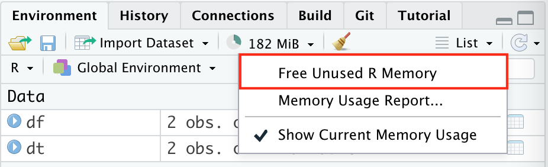

Superviser sa session R
Dans un environnement où R est en concurrence avec d’autres usages informatiques (dans une session personnelle ou environnement de travail partagé comme AUSv3 à l’Insee), les ressources informatiques (mémoire vive et processeurs) sont partagées entre les applications et les utilisateurs. Il est donc essentiel de veiller à faire un bon usage de ces ressources, de façon à ne pas gêner le travail des autres applications ou utilisateurs.
Il est possible de prévenir la plupart des difficultés en adoptant quatre bonnes pratiques :
- Suivre l’utilisation de la mémoire vive et des processeurs avec le gestionnaire des tâches ;
- Bien réfléchir avant d’importer des données volumineuses ;
- Utiliser régulièrement la fonction
gc()pour nettoyer la mémoire ; - Fermer sa session
Rlorsque les traitements sont terminés.
Ces recommandations ne s’appliquent pas au SSP Cloud dont le fonctionnement est différent.
Pourquoi faut-il suivre son usage des ressources informatiques ?
Un usage inadapté des logiciels statistiques peut aboutir à deux problèmes : la saturation de la mémoire vive, et la saturation des processeurs. Le premier problème est plus fréquent avec R que le second.
R et la mémoire vive
Contrairement à d’autres logiciels tels que SAS, R est un langage conçu pour traiter des données chargées dans la mémoire vive (RAM) de l’ordinateur. Cette caractéristique permet à R d’être relativement rapide, mais induit des difficultés lorsque les données sont volumineuses. Le principal risque d’une mauvaise gestion de la mémoire est d’aboutir à une saturation de la mémoire vive : la session R occupe l’intégralité de la mémoire vive, ce qui ralentit les traitements, voire paralyse l’ordinateur. Les problèmes de saturation de la RAM se traduisent généralement par un message du type cannot allocate a vector of size ** Mb (quand la session ne plante pas…).
Le risque de saturation de la mémoire vive est particulièrement fréquent lorsqu’on travaille sur une infrastructure informatique où la mémoire vive est partagée avec d’autres utilisateurs (comme c’est le cas dans les environnements partagés, comme l’est l’architecture AUS) Si plusieurs utilisateurs occupent chacun une grande quantité de mémoire vive sur la même machine virtuelle, il est facile d’arriver à une situation de saturation qui paralyse tous les agents connectés (voire fait planter leur session R).
Le risque de saturation de la mémoire vive est aggravé par la façon dont R gère la mémoire. En effet, une session R augmente automatiquement la quantité de mémoire vive qu’elle occupe lorsque les traitements réclament davantage de mémoire, mais elle ne la libère pas toujours lorsque les besoins en mémoire diminuent. Il est donc possible qu’une session R occupe beaucoup plus de mémoire que ce dont elle a besoin. Par exemple, si vous lancez une session R, que vous importez une table de données de 10 Go, puis que vous la supprimez immédiatement de votre session avec la fonction rm(), il est possible que votre session R continue à occuper inutilement 10 Go de mémoire vive, et ce quand bien même votre environnement RStudio vous indique qu’il n’y a aucun objet en mémoire.
La conclusion est simple : suivre attentivement l’usage que votre session R fait de la mémoire vive est essentiel pour votre efficacité comme pour celles des autres agents.
R et les processeurs
Le second risque est celui d’une saturation des processeurs : une session R consomme l’intégralité de la puissance de calcul du serveur, ce qui paralyse les sessions des autres utilisateurs. Ce risque est relativement peu fréquent avec R, pour deux raisons. D’une part, le langage R est conçu pour réaliser des traitements en utilisant un seul processeur et non tous les coeurs disponibles. D’autre part, les serveurs partagés ont la possibilité de reporter des traitements d’utilisateurs différents sur des coeurs différents
Toutes les machines virtuelles d’AUS disposent d’au moins une dizaine de processeurs ce qui permet, quand un coeur est saturé par un calcul intensif, d’avoir un nouveau traitement statistique exécuté dans un autre coeur.
Toutefois, il peut arriver qu’un traitement réalisé avec R sature l’ensemble des processeurs. En effet, certains packages R sont conçus pour utiliser un grand nombre de processeurs en parallèle, de façon à accélérer les calculs. Il est donc important de suivre l’usage que votre session R fait des processeurs.
Superviser sa session R avec le gestionnaire des tâches
Vous pouvez facilement superviser votre session R avec le gestionnaire des tâches. Ce programme vous permet de suivre votre consommation de mémoire vive et votre usage des processeurs. Il offre également la possibilité de forcer l’arrêt de votre session R si elle est bloquée, mais cette manoeuvre ne doit être réalisée qu’en dernier recours.
Ouvrir le gestionnaire des tâches
Le gestionnaire des tâches est une application installée sur toutes les machines Windows. Son équivalent Linux est htop. Le gestionnaire des tâches est généralement accessible avec le raccourci bien connu Ctrl + Alt + Suppr.
Pour ouvrir le gestionnaire des tâches dans AUS, il suffit d’utiliser le raccourci présent sur le bureau, ou d’utiliser le raccourci clavier suivant : Ctrl + ⇧ Shift + Echap.
Lorsque la fenêtre suivante s’affiche, il faut cliquer sur Plus de détails.

Utiliser le gestionnaire des tâches
L’onglet qui vous sera le plus utile est l’onglet Utilisateurs. Il affiche la liste de tous les agents connectés sur la machine virtuelle. Voici comment vous pouvez utiliser cet onglet pour superviser votre session R :
- les deux pourcentages dans le cadre rouge indiquent le taux d’utilisation des processeurs et le taux d’occupation de la mémoire vive, au niveau de l’ensemble des utilisateurs connectés sur cette machine virtuelle. Vous pouvez constater sur l’image que le serveur n’est pas saturé : le taux d’utilisation est faible (moins de 15%) et le taux d’occupation de la mémoire vive est proche de 40%.
- les lignes du tableau indiquent le taux d’utilisation des processeurs et le taux d’occupation de la mémoire vive, au niveau de chaque utilisateur. Vous devez normalement retrouver votre IDEP dans la première colonne (les IDEP sont masqués sur les captures d’écran pour des raisons de sécurité). Le cadre bleu correspond par exemple à l’auteur de cette fiche. Vous pouvez constater qu’il utilise 7,5% des processeurs et qu’il occupe environ 10 Go de mémoire vive.
- En cliquant sur la petite flèche grise (indiquée par la flèche noire), vous pouvez afficher la consommation de ressources de chacun des programmes que vous utilisez.

Voici trois références à garder en tête pour superviser votre session R :
- Le serveur est proche de la saturation lorsque l’un des deux taux du cadre rouge dépasse 80%.
- Votre utilisation de la mémoire vive est excessive lorsqu’elle dépasse durablement 50 Go alors que vous ne réalisez pas de traitement. Vous pouvez évidemment utiliser beaucoup plus de mémoire pendant un traitement particulièrement lourd.
- Votre utilisation des processeurs est excessive lorsqu’elle dépasse durablement 25%.
En cas de saturation, il faut ouvrir un ticket Si@moi pour signaler un problème de saturation à l’assistance informatique dans les deux cas suivants :
- l’ensemble du serveur est durablement saturé (plus de 15 minutes) ;
- votre session
Rfait un usage excessif des ressources informatiques et vous ne parvenez pas à arrêter votre traitement.
Comment limiter la consommation de mémoire vive avec
R?Les paragraphes suivants donnent quelques conseils pour limiter votre consommation de mémoire vive.
Importer uniquement les données nécessaires
La saturation de la mémoire vive est souvent provoquée par un utilisateur qui essaie d’importer des données très volumineuses. Voici deux bonnes pratiques à adopter, en particulier lorsque l’ensemble des données que vous souhaitez importer avec
Rest volumineux (par exemple d’une taille supérieure à 2 Go) :Il est conseillé d’importer uniquement les colonnes dont vous avez besoin. Toutes les fonctions d’importation de données présentées dans cette documentation comprennent une option permettant de choisir les colonnes. Le tableau qui suit vous indique le nom de l’option en fonction du format des données. Vous pouvez vous reporter à la fiche correspondante pour les détails sur son utilisation.
.csv,.tsv,.txt)fread()data.tableselectread_sas()havencol_select.xlsxread.xlsx()openxlsxcols.xlsread_excel()readxlrange.odsread_ods()readODSrangeDans le cas où vous ne savez pas quelles sont les colonnes dont vous avez besoin (parce que vous découvrez les données par exemple), il est conseillé de commencer par importer un petit nombre de lignes (1 000 ou 10 000) afin d’étudier les données et de choisir ensuite les colonnes à importer. Toutes les fonctions d’importation de données présentées dans cette documentation comprennent une option permettant de définir le nombre de lignes à importer. Le tableau qui suit vous indique le nom de l’option en fonction du format des données. Vous pouvez vous reporter à la fiche correspondante pour les détails sur son utilisation.
.csv,.tsv,.txt)fread()data.tablenrows.csv,.tsv,.txt)read_csv()readrn_maxread_sas()havenn_max.xlsxread.xlsx()openxlsxrows.xlsread_excel()readxln_max.odsread_ods()readODSrangeFaire preuve de prudence en faisant des jointures
Un autre cas standard de saturation de la mémoire vive provient d’une erreur dans la réalisation d’une jointure entre deux tables. En effet, une jointure mal réalisée peut aboutir à une table d’une taille largement supérieure à celle de la mémoire vive disponible sur l’ordinateur ou le serveur. De façon générale, une jointure entre des tables comprenant un grand nombre d’observations (par exemple plus de 500 000 observations) doit être menée avec prudence. Vous trouverez davantage de conseils dans la fiche [Joindre des tables de données], en particulier dans la dernière section.
Nettoyer régulièrement la mémoire vive
Comme mentionné précédemment, une session
Raugmente automatiquement la quantité de mémoire vive qu’elle occupe lorsque les traitements réclament davantage de mémoire, mais ne la libère pas toujours lorsque les besoins en mémoire diminuent. Il est donc important de vérifier régulièrement que vous n’occupez pas plus de mémoire vive que nécessaire.Pour ce faire, la solution la plus simple consiste à utiliser la fonction
gc()(garbage collection, qui signifie littéralement “enlèvement des ordures”). Cette fonction analyse la mémoire vive occupée par la sessionR, et libère la mémoire qui est occupée inutilement. Il est vivement recommandé d’exécuter la fonctiongc()après un traitement portant sur des données volumineuses.Voici une liste indicative d’opérations après lesquelles vous pouvez exécuter
gc():rm();Il y a deux façons de nettoyer la mémoire vive:
gc();Free unused R Memory.

Voici deux remarques sur la fonction
gc():Roccupe de mémoire vive, plus la fonctiongc()met de temps à nettoyer la mémoire. Ce nettoyage peut prendre jusqu’à plusieurs minutes si vous manipulez des données volumineuses.Raffirment qu’il est inutile de se servir degc()carRnettoie automatiquement la mémoire vive lorsqu’elle est presque saturée. Ceci est vrai lorsque vous utilisezRsur votre poste local (et où il n’y a qu’une seule sessionR). En revanche, ce n’est pas vrai dans le cas où plusieurs sessionsRpartagent la mémoire vive (car votre sessionRne peut déclencher le nettoyage de la mémoire vive dans la sessionRd’un autre utilisateur).Les conseils et les bonnes pratiques présentés dans cette fiche devraient suffire à résoudre la plupart des problèmes de saturation que vous pourriez rencontrer. Toutefois, il est possible que cela ne suffise pas, parce que vos traitements requièrent des ressources informatiques particulièrement importantes. En ce cas, il faut déposer une demande métier dans Si@moi.